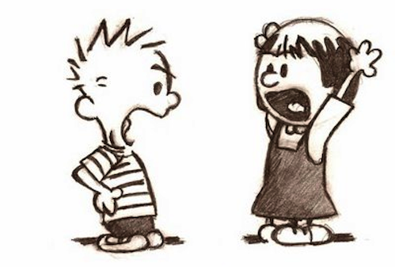

Introduction to Version Control with Git and GitHub
Cirad - UnB
2025-06-17
Principle
What is git?
git is a free and open source software that runs on your computer
git is a Version Control System that helps track changes to files over time. It allows you to
keep the full history of a file and a project
revert back to a previous version
Why use git?
git helps you to
keep your project clean by avoiding saving multiple versions of each file: no more script_v1_final_final_OK.R
always know what the current version is
know what are the differences between versions
What is GitHub?
GitHub is an online platform for hosting and sharing git repositories.
It connects with git to support backup, collaboration, and project management.
Other hosting platforms exist: GitLab, BitBucket, SourceForge…
Why use GitHub?
GitHub allows you to:
back up your work safely in the cloud
store your project history online
synchronise changes between computers and collaborators
collaborate by tracking and reviewing contributions
present your work though a clean interface
manage collaborative research projects
git and GitHub
git and GitHub are useful tools for reproducibility.
They are two different things:
üîÑ Git manages version control on your computer
☁️ GitHub helps you share, back up, and collaborate online
Setting it up
You already set up git and GitHub following these instructions
You should now have:
git installed and configured
a GitHub account and a ssh key
A few definitions
A version is the state of the entire project at a given point in time.
There are three local areas in a git repository:
the working copy is the current state of the directory (what you actually see)
the staging area contains selected files that will be added to the next version
the local repository is an area containing all the versions

The remote repository is a copy of the git project stored on GitHub.
Source of illustrations: N. Casajus
Basic workflow
Step1: Stage the changes
After you’ve created or updated your files: Select the files you want to include in the next version (you can select all or only some modified files)
Staged files are now in the staging area.
Basic workflow
Step2: Commit the staged files
A commit saves a snapshot of your project by creating a new version.
The commited files are not longer on the staging area.
Basic workflow
A Commit records:
WHAT: the specific changes (line-by-line differences) in the files that you staged
WHO: the person who made the changes
WHEN: the date of the commit
WHY: a manually added message stating the reason of the commit (what has been done since the last version)
Basic workflow
Step3: Push your commit(s) from the local to the remote repository (on GitHub)
This makes your work visible to collaborators and backs it up online.
Basic workflow
Pull these changes from the remote to your working area to update your local version
Basic workflow
When to commit?
Commit often (make small commits)
Commit when you reach a milestone
Put separate tasks/problems in separate commits
Commit at the end of a work session
Commit files that actually work
Basic workflow
When to push?
Push often (every commits or every few commits)
Push when you reach a milestone
Push at the end of a work session
When to pull?
- Pull before starting a new work session and before pushing (if working with collaborators)
git and Github from Rstudio
The operations can be performed by writing command lines on the Terminal
Source of illustration: K. V. Kulkani
But we will do most of them from RStudio.
Create a new repository
Create a new repository from scratch
The best practice is to create a git and GitHub repo when you start a new project.
- Create a new GitHub repository
Go to Repositories and click on the green button New
Give a name to your new repo
Add a description
Select if you want to make the repo public or private
Add a README file
You can also change the template of the .gitignore and a license (optional)
Create a new repository from scratch
- Copy the URL of this repo
Create a new repository from scratch
You now need to clone the remote repository to download it on your computer:
- Create a new project in RStudio
File/New Project/Version Control/Git
Paste the repo URL
Select the localisation of your project on your computer
Check the box Open in new session
Once the new project is created, you should see the git pane. Note that a .gitignore file and a README file (if you created one) are added.
Create a repository from an existing RStudio project
- Put the project under version control:
Tools/Version Control/Project Setup
Select Git
- Stage and commit
Create a GitHub repo and get its URL
In the RStudio Terminal, run:
Public versus private repository
A public repo is visible to everyone (but only collaborators can edit it):
for open-science and reproducibility
for visibility
for community contribution
A private repo is visible only by you and collaborators to which you gave access:
- for project containing sensitive information…
üí° You can still make a repo public is you have information (passwords) or data that you don‚Äôt want to share, by including them in the .gitignore.
Ignoring files with .gitignore
You can decide to tell git (and therefore GitHub) not to track certain files by listing them in a special file called .gitignore.
Typical files to ignore:
non-open or sensitive data
passwords
temporary files
large files
files that can be regenerated easily (e.g. figures, .html, .pdf)
⚠️️️Files listed in .gitignore will not be versioned or uploaded to GitHub.
You can edit the .gitignore at any time, but this won’t untrack files that are already tracked.
Basic workflow from RStudio
Stage the changes
Create a new .R file with a few lines of code and save it.
Modified or new files will appear in the git pane in RStudio:
We can review the changes, by clicking on Commit: green lines for added content, red lines for removed or modified content.
To prepare files for the next commit, check the box in the Staged column:
Stage the changes
We don’t need to stage all the modified files:
Unstaged files will not be included in the commit, but can be committed later.
We can ignore a file by clicking on . This adds it to the gitignore so it won’t be tracked in the future.
Commit
Once selected files are staged, we write a commit message and click on Commit:
A commit message as a title and an optional body.
A good commit message should be short but informative: it should explain what was changed and why.
example: ✅ “Fix plot label alignment in Figure 2”
❌ “Update code”
Push
After committing, we may see that our local repository is ahead of the remote one.
This means we have one or more commits that haven’t yet been pushed to GitHub.
Click on Push to send these commits to the remote repository on GitHub.
Pull
To update your local repository with the latest changes from GitHub, click on Pull.
This will synchronize your local repository with the remote one, downloading any new commits made by you or your collaborators directly on GitHub.
Looking back
Seeing past changes in Rstudio
To view the history of previous commits, click on history in the git pane. You can see all the previous commits with their message, author and date.
To inspect the changes made in a specific commit, click on it. You can see the modification: green lines for added content, red lines for removed or modified content.
üí° Now you understand the importance of having informative commit messages
Seeing past changes in GitHub
On the main page of the repository, GitHub shows when each file or folder was last modified, along with the message of the most recent commit.
Click on the clock icon to view the full commit history of the repository.
Click on a specific commit to see all the changes it introduced.
Going back in time
To return to a previous version of your code, you can:
identify the commit you want to go back to and copy the code you want to restore: safe option
use git revert to creates a new commit that undoes the changes introduced by a previous one: more advanced option
use git reset to remove commits from history: risky option
The two last options are more advanced and must be done in the terminal. We won’t cover them here.
Collaborate with GitHub
Invite a collaborator
On GitHub:
on the main page of your repository, click on
click on (in the left-side menu)
click on
type the GitHub user name of the collaborator you want to invite
click on Add
Invite a collaborator
Your collaborator will need to
accept the invitation to start working on your repository (invitation are received by email and also visible on GitHub in notifications)
clone the repository on their computer (see step 3 of Create a new repository from scratch)
The collaborator can then start working: modify, commit, push.
üí° On a personal repository, collaborators have read and write rights, but not admin rights.
Why can’t I push ?
You may get the following error message when trying to push:
It happens when the remote repository has changed since your last pull.
Why can’t I push ?
The remote may have been modified:
directly on git (by you or by a collaborator)
by a collaborator who pushed their changes before you
üí° Solution: pull before pushing again
Why can’t I push ? practice
go on GitHub
edit the README (at the bottom of the repo main page) using
commit this change directly in GitHub
try to push some changes from your local repo, this will generate an error message
pull before pushing again
Why can’t I pull?
You may get the following error message when trying to pull:
You have a conflict üí£ ‚Ķ
What is a conflict?
A conflict occurs when Git cannot automatically merge two versions because they contain changes on the same line(s) of the same file(s).

It usually happens when the remote repository has changed since your last pull on the same lines you have edited locally since your last push.
Local version:
Remote version:
How to solve a conflict?
- open the conflicted file (its name is in the error message)
edit the file manually by removing the version you don’t want to keep (or writting an alternative version)
delete the conflict markers (<<<<<<<, =======, >>>>>>>)
commit and push
How to solve a conflict? practice
To generate a conflict:
Modify a file directly on GitHub (ex: the README) and commit
On the local repo
Don’t pull
Modify the same file on the same line
Try to push: you can’t
Try to pull: this generate a conflict…
You can now solve this conflict!
How to avoid conflicts?
Avoid very long lines of code/text: Git resolves changes line by line — shorter lines reduce the chance of overlap
Pull and push frequently: The longer you wait, the more likely others have changed the same parts
Communicate with collaborators: Know who is working on what — avoid editing the same files
Use branches for bigger changes: Keeps the main branch clean and easier to merge later
Using issues on a collaborative project
A GitHub Issue is a way to track and discuss tasks, bugs, or ideas in a project. This helps a team to organize work and collaborate efficiently.
It works like a forum. You can:
create a to do list
assign tasks to team members
post an answer or a comment
close the issue once completed or solved
Organising a project with a GitHub project
A GitHub projects helps plan, prioritize, and visualize work in a project.
It organises issues on a visual board.
More advanced use
Branch
A branch is a parallel line of development of your project where you can safely make changes without affecting the main code.
Why use a branch? To develop features, fix bugs, or try ideas without breaking the main project — and then merge them back when ready.
Create a branch
To create a new branch from RStudio, click on in the git pane.
You can then select the branch you want to work on:
You can now work on this new branch: pull, work, commit, push…pull, work, commit, push…
Merge branch
Once you are ready to merge your branch with the main branch, go on GitHub:
- create a pull request (a pull request lets you propose merging your changes into the main branch)
- merge your branch to the main branch
Fork and pull request
To work on someone else’s project, you can create a fork.
A fork is your personal copy of someone else’s repository that allows you to:
make changes without affecting the original repo
collaborate on a project that you don’t have write access to (to fix bugs, propose improvements…)
You can then make a pull request to propose to the original repository maintainer to merge your work. They can review your changes before merging.
GitHub as a social (scientific) network
GitHub as a social (scientific) network
GitHub as a social (scientific) network
Follow other users
Follow repository (Watch)
Give visibility to your work (and to yourself!)
Interact and collaborate on projects
Create an Organisation to group the repositories of a research group
Build websites (e.g. project pages, CVs) using GitHub Pages and GitHub Actions
…
Acknowledgments
Marcon E. R: Contrôle de Source in French
Van Hoey S., Desmet P., Onkelinx T. Git hands-on session within RStudio
Ressources
Van Hoey S., Desmet P., Onkelinx T. Git hands-on session within RStudio
Get started with GitHub documentation in Portuguese and in English
GitHub Docs in Portuguese and in English